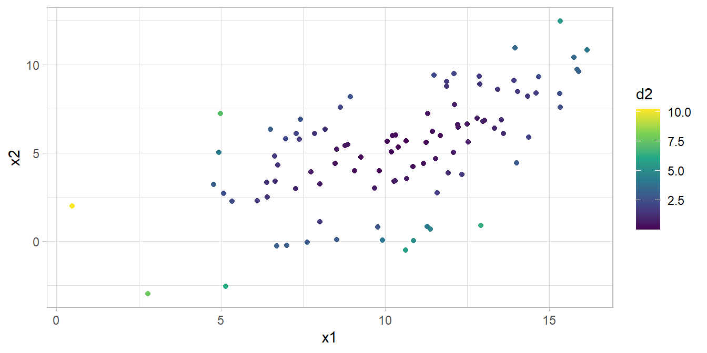
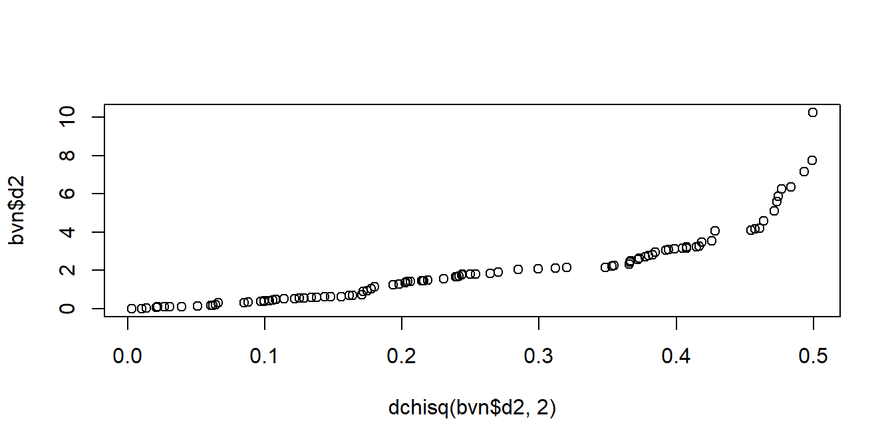
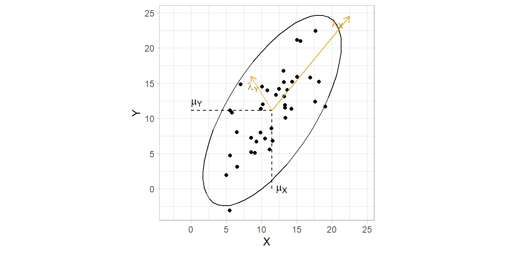

7.3 Multivariate Normal Distribution
The univariate normal distribution, \(X \sim N(\mu, \sigma^2)\), is a function of the variable’s mean and variance, \(\phi(x) = \frac{1}{\sqrt{2 \pi \sigma^2}}\exp\{-\frac{1}{2\sigma^2} (x - \mu)^2\}\). The multivariate normal distribution is similar except that the mean is the mean vector and the variance is the variance-covariance matrix, \(\textbf{X} \sim N(\mu, \Sigma)\). Notice the determinant \(|\Sigma|\) and matrix inverse in the equation.
\[ \begin{equation} \phi(\textbf{X}) = \left(\frac{1}{2 \pi}\right)^{p/2}|\Sigma|^{-1/2}\exp\{-\frac{1}{2} (\textbf{x} - \mathbf{\mu})'\Sigma^{-1}(\textbf{x} - \mathbf{\mu})\} \end{equation} \tag{7.1} \]
If \(p\) is 2, then you have a bi-variate normal distribution. The exponentiated term \((\textbf{x} - \mathbf{\mu})'\Sigma^{-1}(\textbf{x} - \mathbf{\mu})\) is called the squared Mahalanobis distance between \(x\) and \(\mu\).
A linear transformation is distributed \(\textbf{Y} \sim N(\textbf{c}'\mu, \textbf{c}'\Sigma \textbf{c})\). It’s useful to note that each variable in the multivariate normal distribution is normal, as are subsets of variables, linear combinations, and conditional distributions.
For an intuitive understanding of the material, consider the bivariate case.
\[ \begin{pmatrix}X_1 \\ X_2 \end{pmatrix} \sim N \left[ \begin{pmatrix} \mu_1 \\ \mu_2 \end{pmatrix} \begin{pmatrix} \sigma_1^2 & \rho \sigma_1 \sigma_2 \\ \rho \sigma_1 \sigma_2 & \sigma_2^2 \end{pmatrix}\right] \]
If \(\rho\) is 0, then the bivariate normal density function is symmetric in all dimension. As \(\rho \rightarrow 1\), the curve gets increasing skinny along the diagonal.
x <- seq(-4, 4, .1)
y <- seq(-4, 4, .1)
z_values <- function(x, y, r = .8) {
exp(-(x^2-2*r*x*y+y^2)/2/(1-r^2))/2/pi/sqrt(1-r^2)
}The squared Mahalanobis distance, \(d^2 = (\textbf{x} - \mathbf{\mu})'\Sigma^{-1}(\textbf{x} - \mathbf{\mu})\), is the equation for a hyper-ellipse centered at \(\mu\). In two dimensions, it looks like this:
bvn_mtrx <- MASS::mvrnorm(
n = 100,
mu = c(10, 5),
Sigma = matrix(c(10, 5, 2, 9), ncol = 2)
)
colnames(bvn_mtrx) <- c("x1", "x2")
d2 <- mahalanobis(bvn_mtrx, colMeans(bvn_mtrx), cov(bvn_mtrx))
bvn <- as_tibble(bvn_mtrx) %>% bind_cols(d2 = d2)
bvn %>% ggplot(aes(x = x1, y = x2, color = d2)) +
geom_point() +
scale_color_continuous(type = "viridis")
\(d^2\) has a chi-square distribution with \(p\) degrees of freedom. The distribution can be used to evaluate whether a point is an outlier or whether the data is multivariate normal. A Q-Q plot shows the ordered Mahalanobis distances versus the quantiles for a sample of size \(n\) from a chi-squared distribution with \(p\) degrees of freedom.

Describe the shape of the ellipse mathematically with eigenvalues and eigenvectors of the variance-covariance matrix.22 A \(p \times p\) matrix \(\textbf{A}\) has \(p\) eigenvalues, \([\lambda_1, .., \lambda_p]\), that solve the expression
\[ \begin{equation} |\textbf{A} - \lambda \textbf{I}| = 0. \tag{7.2} \end{equation} \]
Calculate \(\lambda\) by taking the determinant and solving the resulting \(p\)-ordered polynomial. The result is \(p\) solutions, not necessarily all unique. Plug the eigenvectors into the following equation and solve for the \(p\) eigenvectors, \(\textbf{e}\). The eigenvector solutions are generally not unique, so to obtain a unique solution, require that \(\textbf{e}_j'\textbf{e}_j = 1\).
\[ \begin{equation} (\textbf{A} - \lambda_j \textbf{I}) \textbf{e}_j = \textbf{0} \tag{7.3} \end{equation} \]
The eigenvalues and eigenvectors define the shape and orientation of the \((1 - \alpha)\%\) prediction ellipse. The ellipse is centered on the means with axes pointing in the directions of the eigenvectors. The distance from the origin to the ellipse boundary is
\[ \begin{equation} l_j = \sqrt{\lambda_j \chi_{p, \alpha}^2} \tag{7.4} \end{equation} \]
dat <- tibble(X = runif(40, 5, 20))
dat$Y <- dat$X + rnorm(40, 0, 3)
mu_X <- mean(dat$X)
mu_Y <- mean(dat$Y)
dat %>%
ggplot(aes(x = X, y = Y)) +
geom_point() +
stat_ellipse(type = "norm") +
geom_segment(aes(x = mu_X, y = 0, xend = mu_X, yend = mu_Y), linetype = 2) +
geom_segment(aes(x = 0, y = mu_Y, xend = mu_X, yend = mu_Y), linetype = 2) +
annotate("text", x = 0, y = mu_Y*1.1, label = expression(paste(mu[Y])), parse = TRUE, hjust = 0) +
annotate("text", x = mu_X*1.05, y = 0, label = expression(paste(mu[X])), parse = TRUE, hjust = 0) +
geom_segment(x = mu_X, y = mu_Y, xend = 8.5, yend = 16,
arrow = arrow(length = unit(0.03, "npc")), color = "goldenrod") +
geom_segment(x = mu_X, y = mu_Y, xend = 22.5, yend = 24.5,
arrow = arrow(length = unit(0.03, "npc")), color = "goldenrod") +
annotate("text", x = 8, y = 14.5, label = expression(paste(lambda[Y])),
parse = TRUE, hjust = 0, color = "darkgoldenrod") +
annotate("text", x = 20, y = 23.5, label = expression(paste(lambda[X])),
parse = TRUE, hjust = 0, color = "darkgoldenrod") +
tune::coord_obs_pred()
The elliptical shape is due to the correlation in the data. In the two-dimensional diagram above, the ellipse would be a perfect circle if the covariances were zero. The eigenvalues would equal the variances, \(\lambda = \sigma^2\), and the eigenvectors would be parallel to the coordinate axis, \(\textbf{e} = \begin{pmatrix}1 & 0 \\ 0 & 1 \end{pmatrix}\). The ellipse flattens with increasing correlation.
Example
File wechsler.txt is a 37x4 data set from PSU STAT 505 with variance-covariance matrix
wechsler <- readr::read_fwf(
file = "./input/wechsler.txt",
col_positions = readr::fwf_widths(
c(2, 3, 3, 3, 3),
col_names = c("ID", "Information", "Similarities", "Arithmetic", "PictureCompletion")
),
show_col_types = FALSE
)
(weschler_cov <- cov(wechsler[, -1]))## Information Similarities Arithmetic PictureCompletion
## Information 11.474474 9.0855856 6.382883 2.0713213
## Similarities 9.085586 12.0855856 5.938438 0.5435435
## Arithmetic 6.382883 5.9384384 11.090090 1.7912913
## PictureCompletion 2.071321 0.5435435 1.791291 3.6936937and the eigenvalues and eigenvectors
## eigen() decomposition
## $values
## [1] 26.245278 6.255366 3.931553 1.911647
##
## $vectors
## [,1] [,2] [,3] [,4]
## [1,] -0.6057467 0.2176473 0.4605028 0.61125912
## [2,] -0.6047618 0.4958117 -0.3196759 -0.53501516
## [3,] -0.5051337 -0.7946452 -0.3349263 0.03468877
## [4,] -0.1103360 -0.2744802 0.7573433 -0.58216643Now consider the 95% prediction ellipse formed by the multivariate normal distribution whose variance-covariance matrix. The half-lengths of the ellipse axes are \(l_j = \sqrt{\lambda_j \chi_{p, \alpha}^2}\) where \(\chi_{4, .05}^2\) is 9.49.
## [1] 15.779990 7.703845 6.107496 4.258778The eigenvectors are the directions of the axes. The first vector, (-0.606, -0.605, -0.505, -0.110) has large values for the first three variables (Information, Similarities, and Arithmetic) and a small value for the fourth (PictureCompletion), so the vector points toward the first three. The second axis has a half-length that is about half the size of the first. It’s directed mostly toward the third variable (Arithmetic) and decreasing for the second variable (Similarities). Overall, the ellipse has one long axis and three shorter axes.
mu_Information <- mean(wechsler$Information)
mu_Similarities <- mean(wechsler$Similarities)
ggplot(wechsler, aes(x = Information, y = Similarities)) +
geom_point() +
stat_ellipse(type = "norm") +
geom_segment(aes(x = mu_Information, y = 0, xend = mu_Information, yend = mu_Similarities), linetype = 2) +
geom_segment(aes(x = 0, y = mu_Similarities, xend = mu_Information, yend = mu_Similarities), linetype = 2) +
annotate("text", x = 0, y = mu_Similarities*1.1, label = expression(paste(mu[2])), parse = TRUE, hjust = 0) +
annotate("text", x = mu_Information*1.05, y = 0, label = expression(paste(mu[1])), parse = TRUE, hjust = 0) +
geom_segment(x = mu_Information, y = mu_Similarities, xend = 10, yend=12.5, arrow = arrow(length = unit(0.03, "npc"))) +
geom_segment(x = mu_Information, y = mu_Similarities, xend = 21, yend=17.5, arrow = arrow(length = unit(0.03, "npc"))) +
annotate("text", x = 11, y = 12, label = expression(paste(lambda[2])), parse = TRUE, hjust = 0) +
annotate("text", x = 19, y = 17, label = expression(paste(lambda[1])), parse = TRUE, hjust = 0) +
tune::coord_obs_pred()Eigenvalues and eigenvectors show up in confidence ellipses, PCA, and factor analysis.↩︎